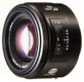

器材库 > 35mm画幅AF定焦镜头 > AF 50/1.4

详细规格
镜头类型
标准镜头
发布日期
未知
焦距
50mm
最大光圈
f/1.4
最小光圈
f/22
视角（对角）
46
镜头结构
7片/6组
光圈叶片
7片
最大放大倍率
0.150倍
驱动马达
AF马达
滤镜口径
49mm
镜头卡口
Minolta/Konica-Minolta/Sony AF
防抖
否
颜色
黑色
尺寸
65.00x38.00mm
重量
235g
zitar2012-06-25 01:044.67 分
操作性 5.00耐用性 5.00性价比 5.00解像力 4.00色彩还原 4.50机械结构 4.50
晓哥2011-11-12 22:084.58 分
操作性 4.50耐用性 4.50性价比 5.00解像力 4.50色彩还原 4.50机械结构 4.50
肆驱2009-03-20 20:075 分
操作性 5.00耐用性 5.00性价比 5.00解像力 5.00色彩还原 5.00机械结构 5.00
sc2012009-02-08 02:094.75 分
操作性 5.00耐用性 5.00性价比 3.50解像力 5.00色彩还原 5.00机械结构 5.00
孤独的侠客2008-08-09 21:035 分
操作性 5.00耐用性 5.00性价比 5.00解像力 5.00色彩还原 5.00机械结构 5.00
胡子先生2007-10-15 20:365 分
操作性 5.00耐用性 5.00性价比 5.00解像力 5.00色彩还原 5.00机械结构 5.00
sc2012007-09-01 02:27
风林火山2006-09-27 20:144.33 分
操作性 4.50耐用性 4.50性价比 4.50解像力 4.00色彩还原 4.00机械结构 4.50
非户2006-09-02 11:084.75 分
操作性 5.00耐用性 5.00性价比 3.50解像力 5.00色彩还原 5.00机械结构 5.00
gaoyuan2005-08-17 14:144.92 分
操作性 5.00耐用性 5.00性价比 4.50解像力 5.00色彩还原 5.00机械结构 5.00
cnbc2005-06-28 08:404.75 分
操作性 5.00耐用性 5.00性价比 5.00解像力 4.50色彩还原 4.50机械结构 4.50
第73个闲人2005-03-29 10:414.92 分
操作性 5.00耐用性 5.00性价比 5.00解像力 4.50色彩还原 5.00机械结构 5.00
hunterkiller2005-03-19 16:164.83 分
操作性 5.00耐用性 5.00性价比 5.00解像力 4.00色彩还原 5.00机械结构 5.00
准色影友2005-03-01 14:174.58 分
操作性 4.50耐用性 4.50性价比 4.50解像力 5.00色彩还原 4.50机械结构 4.50
无毒2005-01-14 14:054.42 分
操作性 5.00耐用性 4.00性价比 5.00解像力 4.50色彩还原 4.50机械结构 3.50
二胖2004-08-05 07:174.17 分
操作性 4.00耐用性 4.00性价比 4.50解像力 4.00色彩还原 4.50机械结构 4.00
马踏飞燕2004-07-09 11:394.67 分
操作性 4.50耐用性 4.50性价比 4.50解像力 5.00色彩还原 5.00机械结构 4.50
大树森林2004-06-09 23:324.25 分
操作性 4.50耐用性 4.50性价比 3.50解像力 4.00色彩还原 4.50机械结构 4.50
JYW2003-12-06 18:084.58 分
操作性 4.50耐用性 4.50性价比 4.50解像力 4.50色彩还原 5.00机械结构 4.50
陈布伟2003-08-21 10:444.83 分
操作性 5.00耐用性 5.00性价比 5.00解像力 5.00色彩还原 5.00机械结构 4.00
产品图 / 样片
外观图
评测 / 相关文章
该产品暂无存档的评测文章